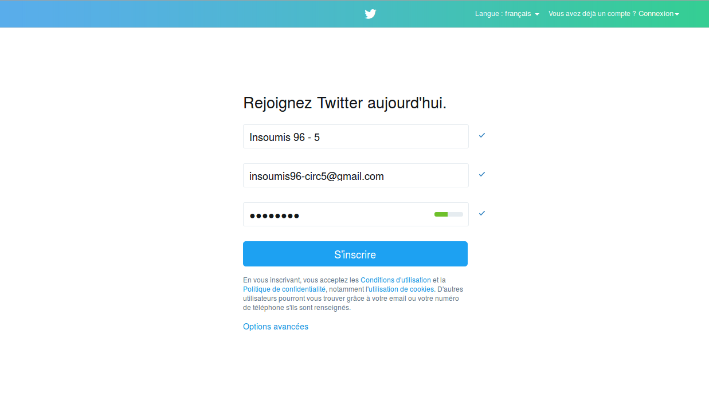
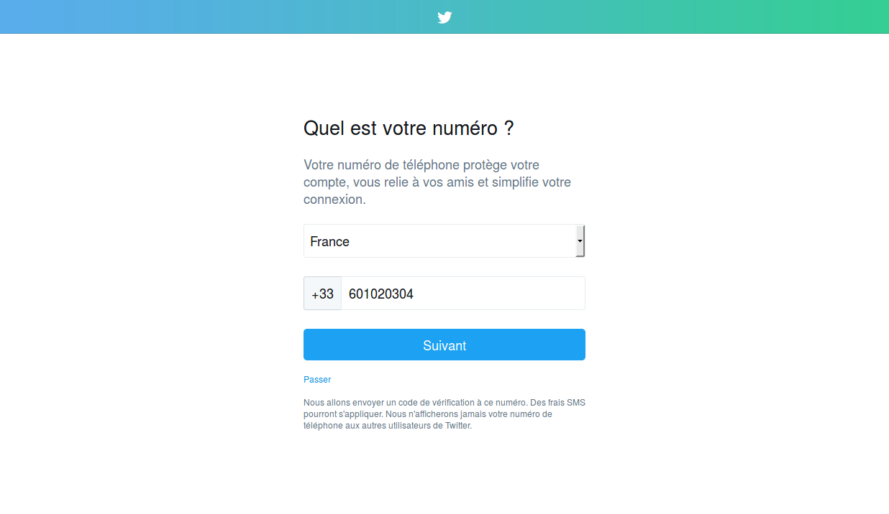
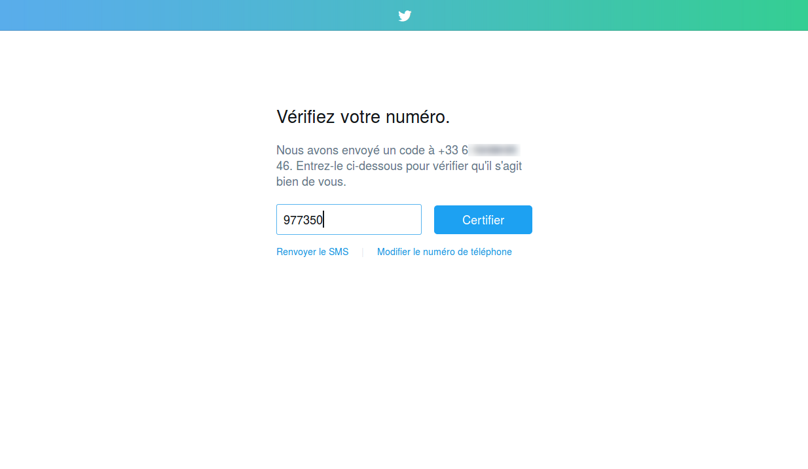
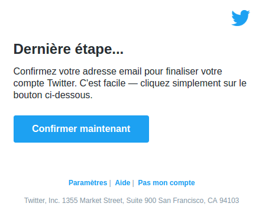
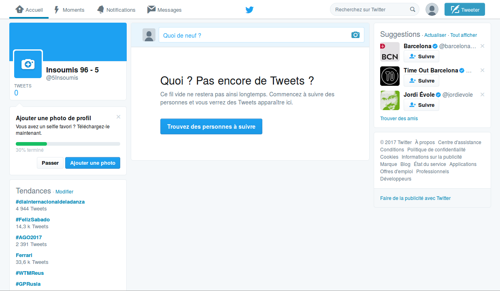

Allez sur la page https://twitter.com/signup pour créer un compte, et remplissez les champs “Nom complet”, “Email” et “Mot de passe” comme montré dans la figure suivante, puis cliquez sur “S’inscrire”.

Entrez votre numéro de téléphone pour sécuriser votre compte. Cette étape est importante car en période de campagne, les piratages sont fréquents. Cliquez sur “Suivant” une fois le champ rempli.

Vous allez recevoir un SMS avec un code : “Votre code de confirmation Twitter est 977350”. Entrez ce code dans la page et cliquez sur suivant.

Votre compte twitter est maintenant activé. Pour le finaliser, n’oubliez pas de de confirmer votre adresse email. Pour cela, trouvez dans vos emails le message “Confirmez votre compte Twitter”, puis cliquez sur “Confirmer maintenant”.

Rendez-vous sur https://twitter.com pour acceder à votre compte Twitter.
